REGARD PUR
User guide
Sort · Edit · Export your photos
on your PC, without internet
by JM.Dargère
Version 3.9.4 • November 2026
Contents
- 1Install and open Regard Pur
- 2Open a folder or an SD card
- 3The grid, the score and the reasons
- 4Filters, sessions, people, duplicates, signature
- 5Auto sort and « Keep the N best »
- 6Compare and full view
- 7Edit: fix, settings, type of photo, my style
- 8Light, colour, levels, curves, sky, crop
- 9AI enhancement (deblur, restore, enlarge, denoise, faces)
- 10Portrait, healing, RAW, rotation, recycle bin, prints
- 11Export
- 12Keyboard shortcuts
- 13FAQ, language, privacy
In three steps
- ① Sort: open a folder; Regard Pur analyses each photo and suggests keeping the best ones.
- ② Edit: fix defects in one click, or fine-tune (like JM LAB PRO).
- ③ Export: copy the kept photos, edited if you wish.
Your originals are never modified. Everything happens on your PC, without internet (except the « GPS places » option, which you start yourself).
1Install and open
Two ways
- RegardPur.zip: unzip, then double-click RegardPur.exe (nothing to install).
- RegardPur_Installation.exe: installs the software with a desktop shortcut.
If Windows blocks the file
Regard Pur is not sold by Microsoft: Windows may show a warning.
- In Edge: arrow ˅ next to « Delete » → Keep anyway.
- Blue window « Windows protected your PC »: More info → Run anyway.
- Or: right-click the file → Properties → tick Unblock.
First launch
A short 5-screen guide presents the three steps. See it again anytime with the ? button at the top right, then See the guide again.
Simple or Expert mode
Top right: Simple shows the essentials, Expert all the fine settings. The ? bubbles explain each setting on hover.
The artificial intelligence (deblur, denoise, faces…) is included in the program: that is why it is rather large (about 600 MB). It uses the PC's graphics card when possible.
2Open a folder or an SD card
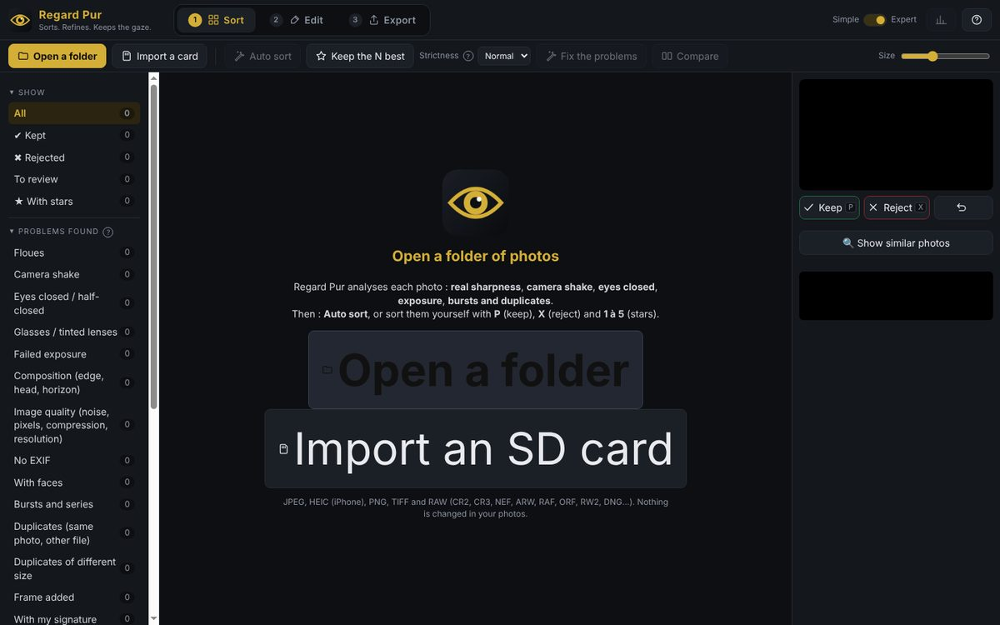
- Open a folder: choose the session folder (subfolders are included).
- Import an SD card: the card is found automatically. Regard Pur copies the photos to the PC (subfolder by date or session name, optional renaming, backup copy to another disk, without copying again those already imported), then starts sorting. Nothing is erased from the card.
- Formats: JPEG, HEIC (iPhone), PNG, TIFF and RAW (CR2, CR3, NEF, ARW, RAF, ORF, RW2, DNG…).
The analysis starts at once; thumbnails appear immediately and the remaining time is shown at the top. If you reopen the folder later, your choices are found again (they are kept in a hidden .regardpur folder).
3The grid, the score and the reasons
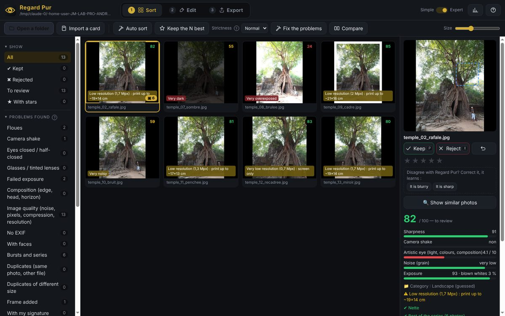
Each thumbnail has a score out of 100. On the right, the panel of the chosen photo explains why:
- Sharpness measured at 100 % (on the eyes if there is a face), camera shake, closed / half-closed eyes, exposure (too dark, blown whites), composition (tilted horizon, cut head), artistic eye (light, colours, composition);
- image quality: noise, pixels, JPEG compression, low resolution, enlarged photo, no EXIF;
- glasses (« check for reflections ») and tinted lenses (eyes not readable: the photo is not rejected for closed eyes).
Disagree?
Under the score, say so: It is sharp / blurry, Eyes open / closed. Regard Pur reviews the whole folder with your opinion and tunes its detection to your eye. It also learns from your P / X choices.
4Filters and groupings
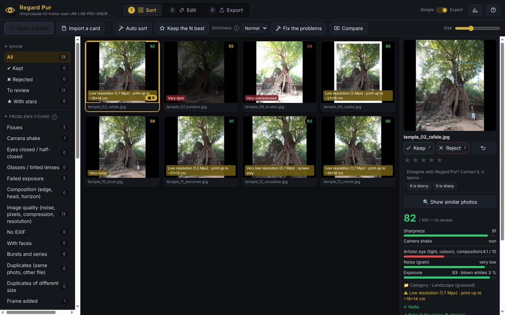
- Show: all, kept, rejected, to review, with stars.
- Problems found: blurry, shake, eyes, glasses, exposure, composition, quality, no EXIF, bursts, duplicates (same photo in another file: cropped, brightened, smaller, framed), frame added, signature. Reject duplicates button: keeps the original (no frame, the largest, the oldest).
- Sessions: photos are split according to breaks (adjustable); a session with many people is a « posed session ».
- People: the same faces are grouped; double-click to give a name.
- Expert options: session category, client, strictness, My signature… (your watermark is searched in the corners), GPS places (city and country, internet), Learn my style (Lightroom / DxO).
5Auto sort and the best
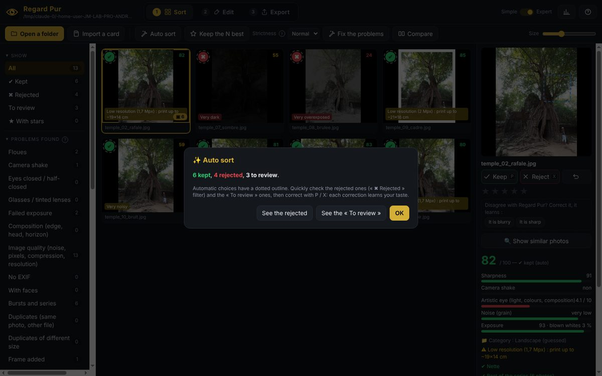
✨ Auto sort keeps the best, sets aside the failed ones (with the reason written) and leaves doubtful cases « To review ». Automatic choices have a dotted outline; your choices by hand are never changed. Strictness: Lenient, Normal or Strict.
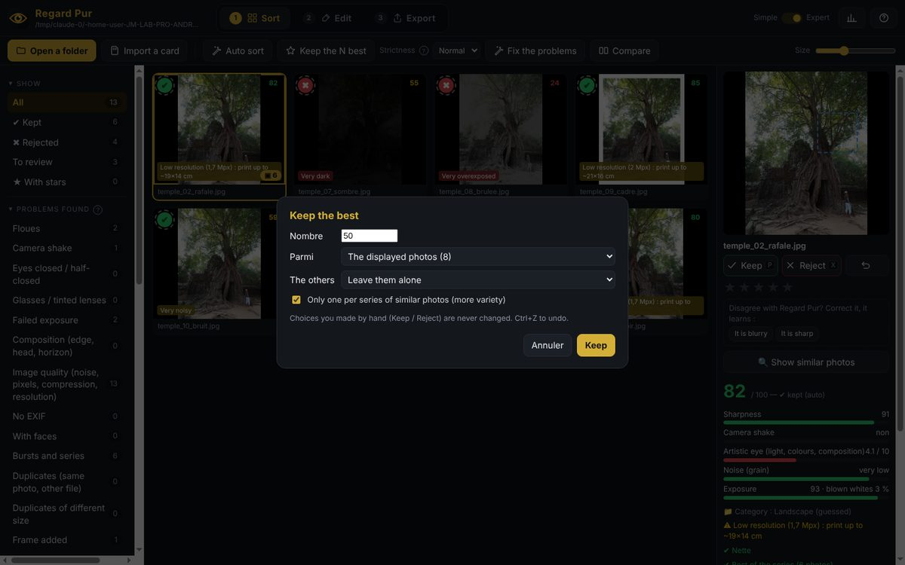
Keep the N best: choose a number, among the displayed photos or in each session, only one per series of similar photos (duplicates counted once); the others can be left alone, set « To review » or rejected. Ctrl+Z undoes.
6Compare and full view
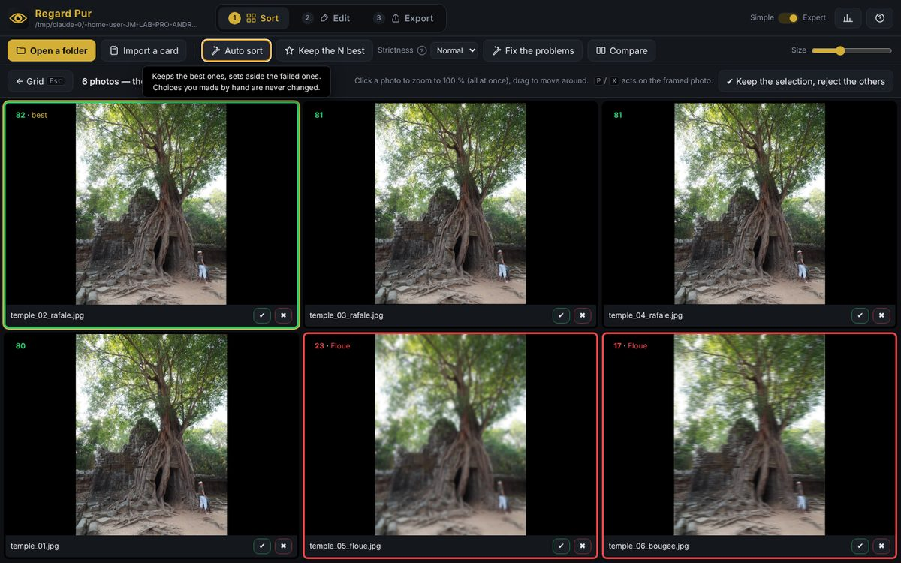
Compare (C): the selection (Ctrl + click) or the photo's series, side by side, the best first. One click zooms to 100 % all the photos at once.
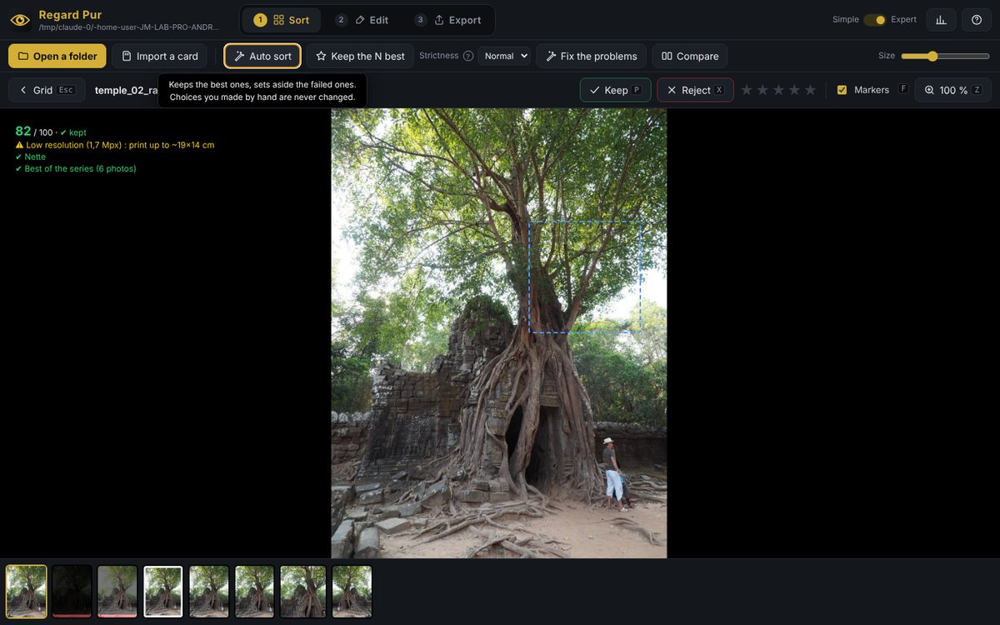
Full view (Enter): Z 100 % zoom on the eyes or the sharp area, F shows faces and the sharp area, face close-ups at the top right.
7Edit
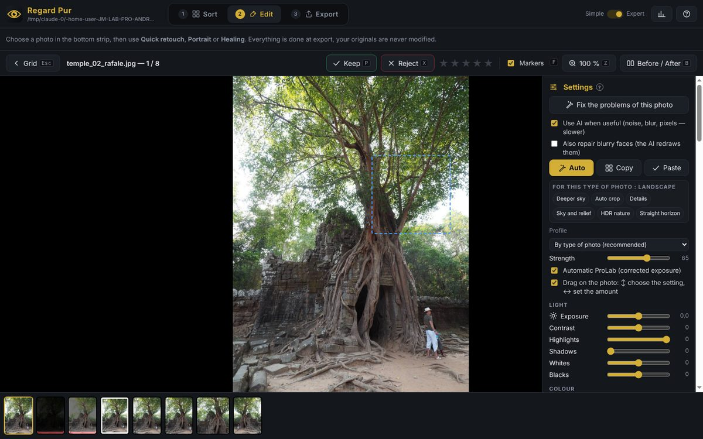
- Fix the problems (photo or selection): the right tool for each defect, in the right order: noise → blur → pixels / compression → exposure, colour, horizon. With « Use AI », each correction is measured before / after and undone if it does not improve. Corrections you often undo are no longer applied by default.
- Auto: automatic ProLab, correction for the type of photo, protected skin, your habits.
- For this type of photo: one-click recipes for portrait, wedding, family, backlit, beach, landscape, night (deeper sky, HDR, details, natural skin…) and My style, learned from Lightroom or DxO.
- Copy / Paste settings, and « Apply these settings to » the selection, the series, the person.
- ↺ Reset: the photo (or the selection) goes back to the original; brush healing is kept.
- Drag on the photo (tick box, off at first): ↕ chooses the setting, ↔ sets the amount (like Snapseed).
8Fine settings
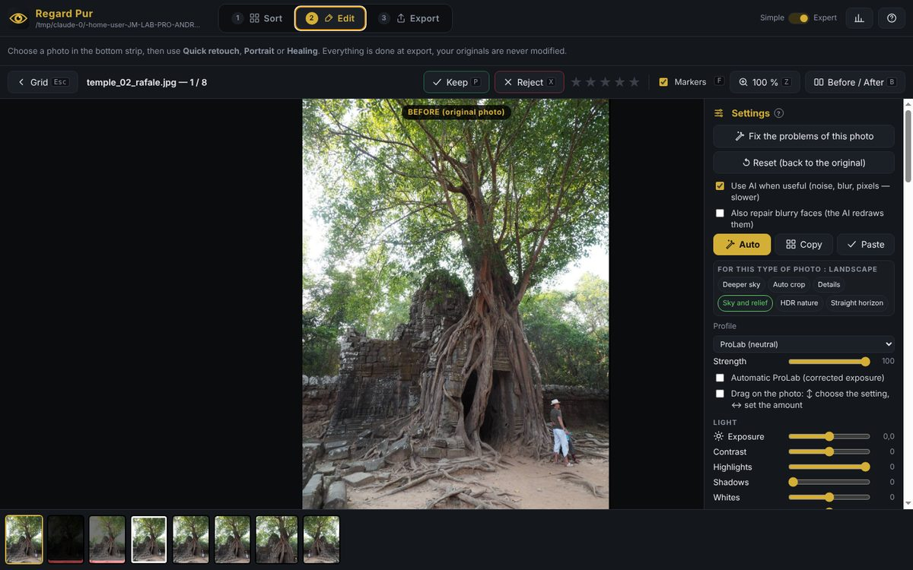
- Profile (JM LAB PRO rendering): “See the photo in each profile” shows your photo in all 13 profiles, one click applies the one you like; automatic ProLab corrects the exposure; strength; Light; Colour.
- Levels (black point, midtones, white point) and Curve per colour (all, red, green, blue).
- Sky: darken, blue, relief — the sky is found automatically.
- Crop: auto (subject on the thirds, no face cut), original, 3:2, 4:5, square, 16:9.
- Deblur (classic, fast) and the JM LAB PRO tools: white balance + eyedropper, details, tonal contrast, HDR, dramatic, glamour glow.
- Before / After: keep pressing on the photo to see the whole original, release for the corrected version; or Before / After button, B key.
9AI enhancement
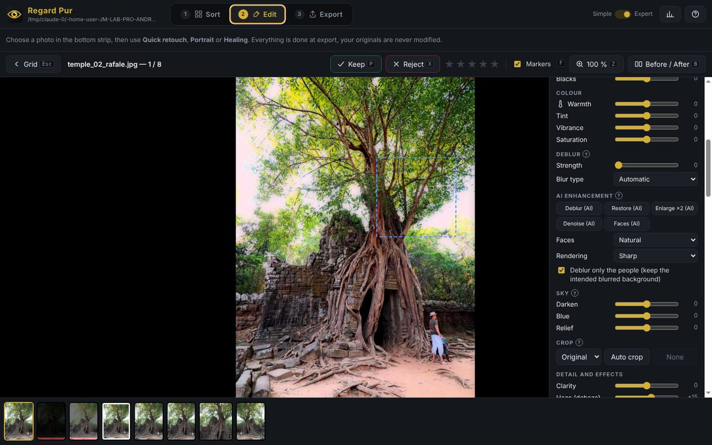
| Button | What for |
|---|
| Deblur (AI) | Camera shake and focus blur. Option « only the people »: the intended blurred background is kept. |
| Restore (AI) | Pixelated, highly compressed or damaged photo (same size). |
| Enlarge ×2 (AI) | Doubles the size while rebuilding detail. Sharp or Soft rendering. |
| Denoise (AI) | Grain of night, indoor, high-ISO photos. |
| Faces (AI) | Blurry faces: eyes, skin, mouth. The AI redraws: compare (strength Natural / Strong / Full). |
The result is saved separately; your settings are applied on top; Back to the original undoes it. Time: a few seconds to a few minutes depending on the photo and the PC.
10Other tools
- Portrait retouch: skin (keeps the grain), acne, spots, dark circles, lines, eye whites, iris, teeth, lips, glow, background (blur, dark, desaturated), presets Natural, Glow, Glamour, Wedding, Man, Child.
- Healing: paint over a spot or an object, the area is rebuilt.
- Real RAW: in Edit, the RAW is developed from the sensor data (camera white balance, recovered highlights); the export starts from this development.
- Rotation: ↺ ↻ buttons or keys [ ] (applied at export), Recycle Bin Del (recoverable), Quick copy S to a folder chosen once (Shift+S to change it).
- Print check (Expert mode, right panel): from 10×15 to 50×75 cm, ✓ good (≥ 250 dpi), ≈ just enough, ✗ too small, ✂ face cut by the crop.
- GPS places: city and country of geotagged photos (OpenStreetMap, internet, rounded coordinates).
11Export
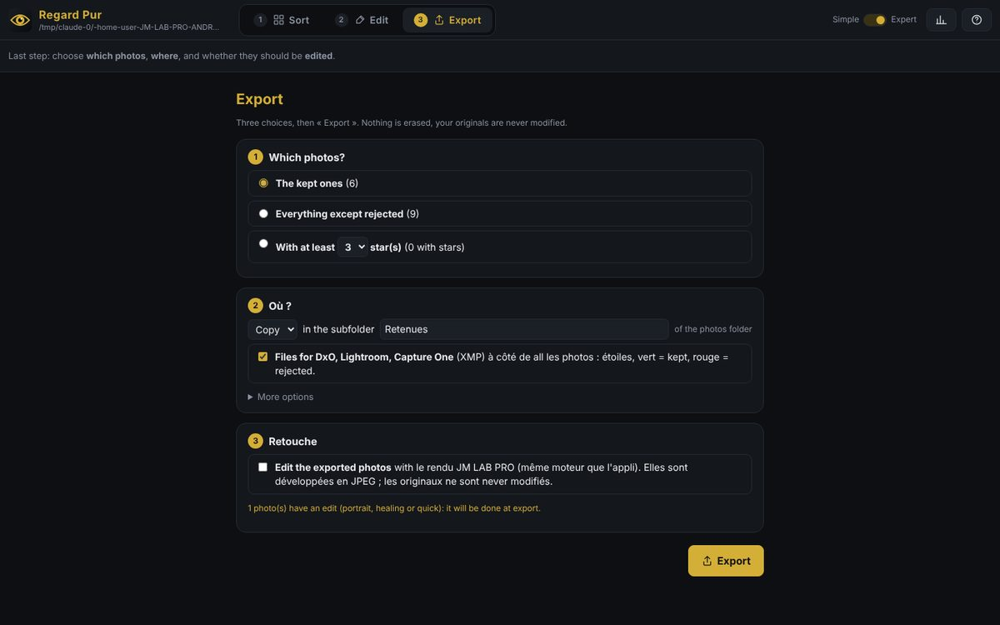
- Which photos? The kept ones, everything except rejected, only the corrected or edited photos, or with at least N stars.
- Where? Copy or move to a subfolder; XMP files for DxO, Lightroom, Capture One (stars, kept in green, rejected in red); put away the rejected ones.
- Retouch: corrected photos are exported exactly as you see them in ② Edit (profile, ProLab, AI, portrait, sky, crop, rotation); the others are copied as they are. The profile is chosen in Edit, not here. category_client_001 naming; also include the original if you wish.
Nothing is erased. A summary is shown at the end, with the estimated time saved.
12Keyboard shortcuts
| Key | Action |
|---|
| P / X / U | Keep / Reject / Cancel the choice |
| 1 … 5 | Stars (same number = remove) |
| ← → ↑ ↓ | Previous / next photo, row above / below |
| Enter / Esc | Full view / back to the grid |
| Z / F | 100 % zoom / show faces and sharp area |
| C / Space / G | Compare / open the series / group series |
| B (or long press) | Before / After: whole original photo |
| [ ] | Rotate left / right |
| Del | Move to the Recycle Bin |
| S / Shift+S | Quick copy / change folder |
| Ctrl + click / Shift + click | Select several photos / a range |
| Ctrl + A / Ctrl + Z | Select all / undo |
13Frequently asked questions
Are my originals modified?
Never. Edits are done at export, in new files.
A sharp photo is judged blurry (or the reverse)
Use Disagree: Regard Pur tunes itself to your eye for the whole folder.
The AI is slow
Without a graphics card, deblurring a large photo can take several minutes. Small photos and « Restore » are fast.
How do I reuse my Lightroom or DxO style?
Expert options → Learn my style → choose an edited folder (.xmp, exported JPEGs, .dop). « My style » appears in Edit.
Language
French or English according to Windows; English / Français button in the ? help.
Privacy
No photo leaves your PC. Only the GPS places option, started by you, sends rounded coordinates (about 1 km) to OpenStreetMap.